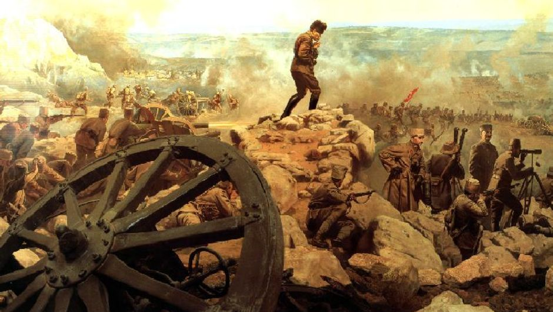

1878 Berlin Antlaşması’nda Rusya’nın Ermeniler’in koruyuculuğunu üstlenmesiyle Ermeni sorunu ortaya çıkmıştır. Özellikle Rusya’nın, ayrıca İngiltere ve Fransa’nın kışkırtmaları söz konusudur. Brest-Litowsk Antlaşması’ndan sonra Kafkaslarda ilerleyişe geçen Osmanlı ordusu Mondros’tan sonra geri çekilmiş, burada Ermenistan ve Gürcistan devletleri kurulmuştur.Ermeniler Wilson ilkelerine göre nüfus çoğunluğunda olduklarını iddia etmişler, Çukurova ve Doğu Anadolu’yu içine alan bölgede bir Ermeni devleti kurmak istemişlerdir. General Harbord yayınladığı raporda Ermeni iddialarının doğru olmadığını açıklamıştır.TBMM açıldığı sırada Ermeniler saldırılarını artırmış, bunun üzerine Doğu Cephesi komutanlığına getirilen Kazım Karabekir Paşa’ya hareket emri verilmiştir. (24 Eylül 1920). Sarıkamış, Kars ve Gümrü ele geçirilmiş, Ermeniler barış istemiştir. Sorgulayınız:Kurtuluş Savaşı'na Doğudan başlanması bir rastlantı olabilir mi? Niçin ilk açılan cephe doğu cephesi olmuştur?

Gümrü Antlaşması (3 Aralık 1920) :* Çıldır gölü Aras nehri sınır olacak * Berlin Antlaşması ile kaybedilen Kars çevresi ile Ardahan’ın bir bölümü TBMM’ye bırakılacak * Ermenistan TBMM’nin onaylamadığı hiçbir anlaşmayı imzalamayacak * Doğu Anadolu’da Ermeniler’in çoğunlukta olmadığı kabul edilecektir. Önemi : TBMM’nin ilk askeri ve siyasi zaferidir.
Notlar : * Sevr’in geçersizliği ilk kez belirtilmiştir. * Misak-ı Milli kısmen gerçekleştirilmiştir. * Doğu sınırı belirlenmeye başlanmıştır. * Ermeni meselesi çözüme kavuşturulmuştur. * İlk kapanan cephe Doğu cephesidir. Buradaki birlikler batıya kaydırılmıştır. * Gürcistan’a bir nota verilmiş, Yapılan Batum Antlaşması’yla (23 Şubat 1921) Ardahan, Batum TBMM’ye verilmiştir. * Halkın TBMM1ye güveni artmıştır. 2.GÜNEY CEPHESİ :Urfa, Antep ve Maraş bölgesi İngilizler, daha sonar Fransızlar tarafından işgal edilmiştir. İngiliz işgaline ayaklanmayan halk Fransızlar’ın Ermeniler’i kışkırtmaları ile yapılan katliamlar karşısında direnişe geçmiştir. Maraş ve Urfa TBMM açılmadan kurtarılmış, Antep bir yıllık bir kuşatmadan sonra düşmüştür. Çukurova bölgesinde de bazı mücadeleler yapılmıştır. Sivas Kongresi’nde alınan kararla güneyde Kuvay-ı Milliye kurulmasına çalışılmıştır. Bölgenin işgal altında tutulmasının mümkün olmadığını anlayan Fransızlar Sakarya Savaşı’ndan sonra imzalanan Ankara Antlaşması’yla askerlerini çekmişler, Hatay hariç Suriye sınırımız belirlenmiştir.
Not-1:Güney Cephesindeki başarılar bir şehir halkının düzenli orduya karşı kazandığı başarılardır. Bu cephede düzenli ordu kurulamamıştır.
Not-2:Fransa , Ankara Antlaşması ile TBMM’yi tanıyan ilk itilaf devleti olmuştur.
3.GÜNEYBATI ANADOLU CEPHESİ :Savaş sırasında yapılan gizli anlaşmalar ile Ege ve Akdeniz İtalya’ya verilmiş iken Doğu Akdeniz ’de güçlü bir İtalya’yı menfaatlerine uygun bulmayan İngiltere Ege Bölgesi’ni Yunanistan’a verince İtalya’nın diğer İtilaf Devletleri ile arası açılır ve Milli Mücadele’den yana tavır koyar. Her ne kadar İtalyanlar Antalya yöresini işgal etmişlerse de Ankara Hükümeti orduları başarılar kazanmaya başlayınca TBMM ile çatışmayı göze alamaz ve II. İnönü’den sonra kısmen, Sakarya Zaferi’nden sonra da tamamen Anadolu’dan çekilir.
Not :İtalya ile silahlı mücadeleye girilmemiştir.
4.BATI CEPHESİ :Düzenli ordunun kurulması : Yunanlılar’ın Bursa – Uşak arasındaki ilerleyişlerinin durdurulamaması, Gediz muharebelerinde alınan mağlubiyet, Kuvay-ı Milliye birliklerinin vatanı topyekün kurtaramayacağının, düzenli ordular karşısında başarılı olamayacağının anlaşılması ve zaman zaman halka baskı ve zulüm yapmaları düzenli ordu kurma çalışmalarını hızlandırmıştır. Ali Fuat Paşa ‘nın yerine Batı Cephesi komutanlığına getirilen İsmet ve Refet beylerin çalışmalarıyla düzenli ordu kurulmuştur.
I. İNÖNÜ SAVAŞI (6 – 10 OCAK 1921)
Yunanlılar :
* TBMM’nin kurduğu düzenli orduların ilk zaferidir. * Düzenli ordu çalışmaları sona ermiş milli birlik ve bütünlük sağlanmıştır. * Halkın kendisine ve düzenli orduya duyduğu güven artmıştır. * Teşkilatı Esasiye kabul edilmiştir. (20 Ocak 1921) * Londra konferansı toplanmıştır (23 Şubat – 12 Mart 1921) * İstiklal Marşı kabul edilmiştir. (12 Mart 1921) * Afganistan ile dostluk antlaşması imzalanmıştır. (1 Mart 1921) * Ruslar’la Moskova Antlaşması imzalanmıştır. (16 Mart 1921) * İsmet Bey generalliğe yükselmiştir. * İstiklal mahkemeleri kaldırılmıştır.
LONDRA KONFERANSI (23 ŞUBAT – 12 MART 1921)TBMM’nin arka arkaya aldığı başarılar özellikle de I. İnönü zaferinden sonra İtalya ve Fransa’nın ısrarıyla Londra’da bir konferans toplanarak Sevr’in yeniden gözden geçirilmesine sebep olmuştur. Amaçları küçük değişikliklerle Sevr’i TBMM’ye kabul ettirmek ve Yunan ordusuna zaman kazandırmaktır. İkilik çıkarmak amacıyla hem İstanbul Hükümeti hem de TBMM davet edilmiştir.
TBMM’nin Amaçları :* Misak-ı Milli’yi dünya kamuoyuna duyurmak * Savaş taraftarı olmadıklarını göstermektir. İstanbul Hükümeti temsilcisinin sözü TBMM temsilcisine bırakması ikilik çıkmasını önlemiştir. TBMM temsilcisi Bekir Sami Bey Misak-ı Milli’yi İtilaf devletleri ise Sevr’i savunmuşlar, neticede konferans bir netice alınmadan dağılmıştır.
Not-1 :Londra Konferansı’nın önemi TBMM’nin varlığının İtilaf Devletleri tarafından resmen tanınmış olmasıdır.
Not-2 :Milli mücadelenin savaş meydanlarında kazanılacak başarılardan sonra gerçekleşebileceği anlaşılmıştır.
Not-3 :İtilaf devletleri arasındaki görüş ayrılığı artmıştır.
Not-4 :İtilaf devletlerince Yunanlılar’a bir şans daha tanınarak taarruz emri verilmiştir.
İSTİKLAL MARŞI’NIN KABULÜ (12 MART 1921)TBMM’nin açtığı ödüllü yarışmaya istemeyerek de olsa katılan Mehmet Akif “Kahraman Ordumuza” hitaben yazdığı şiirle birinci gelmiştir.
AFGANİSTAN İLE DOSTLUK ANTLAŞMASI (1 Mart 1921) :Moskova’da Ruslar’la görüşmeler sürerken, Afganistan ile bir dostluk antlaşması imzalanmış, birbirlerini tanımışlar ve yardımlaşma sözü vermişlerdir.
Not :TBMM’yi tanıyan ilk Müslüman Asya devletidir.
MOSKOVA ANTLAŞMASI (16 Mart 1921) :Ortak düşman karşısında yalnızlık politikasından da kurtulmak isteyen Sovyet Rusya ve TBMM birbirlerine yakınlaşmışlar ve Moskova Antlaşması imzalanmıştır. Buna göre : * Batum Gürcistan’a verilmek şartı ile Kars, Ardahan ve Artvin’in TBMM’ye ait olduğu kabul edilmiştir. (Misak-ı Milli’den ilk taviz verilmiştir.) * Osmanlı Devleti’yle Çarlık Rusya arasında imzalanan anlaşmalar geçersiz sayılmıştır. * Taraflardan birinin onaylamadığı bir antlaşmayı diğeri de onaylamayacaktır. * Sovyet Rusya, TBMM’ye yardım yapacaktır. Önemi : İlk kez bir Avrupa Devleti tarafından TBMM ve Misak-ı Milli tanınmıştır.
Not-1:Kapitülasyonların kaldırılması ilk kez Sovyet Rusya tarafından kabul edilmiştir.
Not-2 :Doğu sınırımız büyük ölçüde çizilmiştir. (Kesin olarak Kars’ta belirlenmiştir.)
II. İNÖNÜ SAVAŞI (23 MART – 2 NİSAN 1921)Londra Konferansı’nın hiçbir sonuç alınamadan dağılmasından sonra, İtilaf devletleri Yunanlılar’ a bir şans daha tanıyıp taarruz emri vermişlerdir. Yunanlılar Türk ordusunun daha fazla güçlenmesini önlemek, Sevr’i kabul ettirebilmek, Eskişehir’i ele geçirip Ankara’ya geçmek, Milli Mücadele’yi sona erdirmek amacıyla harekete geçmişler fakat inönü mevkiinde mağlup olarak geri çekilmişlerdir. 8 Nisan’da Afyon da Yunanlılar’dan geri alınmıştır.
Sonuçları :* Fransızlar Zonguldak’ı, İtalyanlar Güneybatı Anadolu’yu boşaltmaya başlamışlardır. * Batı cephesi birleştirilmiş ve İsmet Bey’in emrine verilmiştir. * Düzenli orduya duyulan güven artmıştır. * Mustafa Kemal çektiği bir telgrafla İsmet Paşa’yı tebrik etmiştir. * Türk ordusu Dumplupınar ve Aslıhanlar’da bir taarruz denemesinde bulunmuş, fakat yeterli taarruz gücüne ulaşılamadığı için başarılı olamamıştır.
KÜTAHYA – ESKİŞEHİR MUHAREBELERİ (10 – 24 TEMMUZ 1921) :II. İnönü Savaşı’ndan sonra taarruz için yeterli gücü olmadığı anlaşılan Türk ordusuna karşı, iyi donatılmış ve üstün sayıda bir kuvvetle saldırılması durumunda başarılı olacaklarına inanan Yunanlılar, taarruza geçerek Afyon, Kütahya ve Eskişehir’i ele geçirmişlerdir. Mustafa Kemal’in emri ile Türk Ordusu Sakarya Nehri’nin doğusuna çekilmiştir.
Sonuçları :* Yunanlılar Sakarya Nehri’ne kadar olan yerleri işgal etmiş * Halkta ve mecliste bir panik başlamış * Meclisi Kayseri’ye taşıma ve yeniden Kuvay-ı Milliye’ye dönme tartışmaları başlamış. * Mustafa Kemal’e karşı muhalefet güçlenmeye başlamış * 5 Ağustos’ta “başkomutanlık Yasası” çıkarılmış * 8 Ağustos’ta Tekalif-i Milliye emirleri çıkarılmış. * İstiklal mahkemeleri yeniden kurulmuştur.
BAŞKOMUTANLIK YASASI (5 Ağustos 1921)Mustafa Kemal işleri daha hızlı yürütmek ve kötü gidişe son vermek amacıyla meclisten geniş yetkiler istemiş, 3 aylığına başkomutanlığa atanmıştır. Buna göre yasama, yürütme, İstiklal Mahkemeleri vasıtasıyla yargı yetkisine sahip olmuştur. Birkaç kez uzatılan görev, 1922 Temmuzu’nda süresiz olarak uzatılmıştır. Cumhurbaşkanı seçilinceye kadar bu görevde kalmıştır.
TEKALİF-İ MİLLİYE EMİRLERİ (8 Ağustos 1921)Orduyu Sakarya Savaşı’na hazırlamak amacıyla halktan son bir kez fedakarlık istenmiş, elinde bulunan yiyecek ve giyecek maddelerinin yük ve binek araçlarının bir kısmını, silah ve cephane olarak ne varsa hepsini orduya istemişlerdir. İllerde ve ilçelerde vergi komisyonları kurulmuş, vergilerin toplanması ve askerden kaçmaların önlenmesi için yeni İstiklal Mahkemeleri kurulmuştur. Not : Tekalif-i Milliye Emirleri’ne göre toplanan yardımlar Sakarya Savaşı’na yetişmemiş, daha çok Büyük Taarruz’da kullanılmıştır.
SAKARYA MEYDAN MUHAREBESİ (23 Ağustos – 13 Eylül 1921)Yunanlılar Sakarya Nehri’nin doğusuna geçerek taarruza başlamışlar, Türk savunma hattını yer yer aşarak Ankara yakınlarına kadar gelmişlerdir. Mustafa Kemal’in “Hattı müdafaa yoktur, sathı müdafaa vardır. O satıh bütün vatandır...” sözüyle uyguladığı yeni taktik başarıyla uygulanmış, Yunanlılar durdurulmuş, sonra Sakarya Nehri’nin batısına atılmışlardır. Taarruz gücüne ulaşmamış olan Türk ordusu daha ileriye gitmemiştir.
Sonuçları:* Bir dönüm noktası niteliğindedir. 1683 II. Viyana kuşatmasından beri devam eden geri çekilme son bulmuştur. * Son savunma savaşıdır. * Yunanlılar’ın taarruz gücü kırılmış, savunmaya çekilmiştir. * Sovyet Cumhuriyetleri’yle Kars Antlaşması imzalanmıştır. (13 Ekim 1921) * Fransa ile Ankara Antlaşması imzalanmıştır. (20 Ekim 1921) * Ukrayna ile dostluk Antlaşması imzalanmıştır.( 2 Ocak 1922) * İtalyanlar Anadolu’yu tamamen boşaltmışlardır. * Mustafa Kemal ‘e gazilik ünvanı ve mareşallik rütbesi verilmiştir.(19 Eylül 1921) * İngilizler teker teker müttefiklerince terkedilince çareyi savaşı durdurmakta bulmuşlar ve 22 Mart’ta iki tarafa ateşkes teklifinde bulunmuşlardır. Türk ordusunu hareketsiz bırakmak, milli hükümeti gevşetmek amaçlarını taşıyan teklif TBMM tarafından kabul edilmemiş, kesin barış için kesin zaferin lazım olduğu anlaşılmıştır. * Yunanlılar, İngiliz desteğini kaybetmişlerdir. * İngilizler ile Esir Mübadelesi Antlaşması yapılmıştır. (22 Ekim 1921)
KARS ANTLAŞMASI (13 Ekim 1921)Sakarya’dan sonar Kafkas Cumhuriyetleri ile (Ermenistan, Azerbaycan, Gürcistan) imzalanmıştır. Buna göre; Moskova Antlaşması şartları tekrar edilmiş ve Doğu sınırımız kesinlik kazanmıştır.
ANKARA ANTLAŞMASI (20 Ekim 1921)II. İnönü’den sonra TBMM ile anlaşmak için Ankara’ya elçiler gönderen Fransa, Kütahya – Eskişehir yenilgisinden sonra bekleme yoluna gitmiş, Sakarya Savaşı kazanılınca Ankara Antlaşması imzalanmıştır. Buna göre : * Fransa işgal ettiği toprakları boşaltacak * Boşaltılan topraklarda genel af ilan edilecek * Hatay’daki Türklere geniş haklar tanınacak ve Hatay özerk bir bölge olacak * Fransa TBMM ve Misak-ı Milli’yi tanıyacak * Caber kalesi Türk bayrağı altında, Türk mülkü olarak kalacaktır.
Not-1:TBMM’yi ve Misak-ı Milli’yi tanıyan ilk itilaf devleti Fransa’dır.
Not-2 :
Bu durum itilaf devletleri arasındaki görüş ayrılığını arttırmıştır. Güney cephesi kapanmış, buradaki askerlerimiz batıya kaydırılmıştır.
Not-3:
Batum’dan sonra Hatay’ın Fransa’ya bırakılması Misak-ı Milli’den verilen ikinci tavizdir.
BÜYÜK TAARRUZ (26 Ağustos – 18 Eylül 1922)Mustafa Kemal’in başkomutanlığındaki Türk ordusu 1 yıl kadar hazırlık devresi geçirmiş, sürenin uzaması bir ara muhalefetin yoğunlaşmasına sebep olmuştur. 26 Ağustos’ta taarruza geçilmiş, (Afyon üzerinden) 4 günde Yunan savunma hattı aşılmış, Dumlupınar mevkiinde 20 Ağustos’ta Başkomutanlık Meydan Muharebesi ile Yunan ordusu büyük ölçüde imha edilmiştir. “ Ordular, ilk hedefiniz Akdeniz’dir. İleri” emriyle harekete geçen Türk ordusu 9 Eylül’de İzmir’i kurtarmış, 18 Eylül’de bütün Batı Anadolu Yunanlılar’dan temizlenmiştir.Türk ordusu kuzeye, Marmara, İstanbul ve Boğazlar’a doğru yönelmiş, İngilizler’le savaş durumu ortaya çıkmıştır. Fakat iki taraf da savaşı göze alamadığı için Mudanya Ateşkes Antlaşması imzalanmıştır.
MUDANYA ATEŞKES ANTLAŞMASI (11 EKİM 1922)İngiltere, dominyonlarının ve İngiliz basınının baskısı ve müttefiklerinin yalnız bırakması sonucu savaşı göze alamayarak barış görüşmelerine razı olmuştur. Mudanya’daki barış görüşmelerine İngiltere, İtalya, Fransa ve TBMM katılmıştır. Görüşmelere katılmayarak Mudanya yakınlarında bir gemide bekleyen Yunanlılar’ı İngilizler temsil etmiştir. Bu antlaşmaya göre : * Meriç Nehri’ne kadar olan Doğu Trakya 15 gün içinde boşaltılacak ve 1 ay sonra Türk ordusu buraya girebilecek * Barış imzalanıncaya kadar Doğu Trakya’daki Türk askeri 8 bin Jandarma kuvvetini geçmeyecek * İstanbul ve Boğazlar TBMM’nin denetimine bırakılacak * Barış imzalanıncaya kadar İstanbul İtilaf devletlerinin denetiminde kalacak, Türk ordusu gösterilen sınırı geçmeyecektir.
Notlar :* Kurtuluş Savaşı’nın askeri safhası sona ermiş, siyasi safhası başlamıştır. * Savaşılmadan Doğu Trakya, Marmara ve İstanbul çevresi kurtarılmıştır. * Mudanya’da TBMM’yi temsil eden İsmet Paşa bu başarısından dolayı Lozan’a baş temsilci olarak gönderilmiştir. *Osmanlı Devleti hukuken sona ermiştir. *TBMM’nin varlığı İtilaf Devletleri tarafından tanınmış, Misak-ı Milli büyük ölçüde gerçekleştirilmiştir.
SALTANATIN KALDIRILMASI (1 Kasım 1922)Amasya genelgesinden beri bahsedilen millet egemenliği TBMM’nin açılmasıyla gerçekleştirilmiş ve TBMM’nin üstünde hiçbir güç olmadığı belirtilmiştir.Millet egemenliğinin yanında saltanatın da devam etmesi manasızdır. Üstelik Lozan görüşmelerine İtilaf Devletleri ikilik çıkarmak için İstanbul Hükümeti’ni de davet etmişlerdir. İçte birliği sağlamak amacıyla 1 Kasım 1922’de saltanat hilafetten ayrılarak kaldırılmıştır. Böylece Osmanlı Devleti resmen sona ermiştir. Vahdettin sadece halife ünvanını kullanarak İngilizler’e müracaat etmiş ve ülkeyi terk etmiştir. TBMMVahdettin’deki halifelik sıfatından İngilizler’in faydalanmasını engellemek için halifeliği Osmanlı hanedanından Abdülmecid Efendiye vermiştir.
Not-1 :Osmanlı Devleti resmen sona ermiştir.
Not-2 :Laikliğin ilk aşaması gerçekleşmiştir.
Not-3 :Milli egemenlik yolunda önemli bir adım atılmıştır.
LOZAN BARIŞ ANTLAŞMASI (20 Kasım 1922 – 4 Şubat 1923, 23 Nisan 1923-24 Temmuz 1923)TBMM barış görüşmelerinin yeri olarak İzmir’i teklif etmişse de kabul edilmemiş, tarafsız bir bölge olan Lozan’da anlaşılmıştır. TBMM’yi kimin temsil edeceği tartışma konusu olmuş, Mudanya Ateşkes Antlaşması’ndaki başarılarından dolayı İsmet Paşa gönderilmiştir. TBMM kapitülasyonlar ve Ermeni yurdu meselesinde taviz verilmemesini istemiştir.Görüşmelere birçok İtilaf devletinin yanında Boğazlar konusunda Sovyetler ve Bulgaristan da katılmıştır. ABD ise yalnızca gözlemci göndermiştir. Görüşmeler 20 Kasım’da başlamış ama bir çok konuda anlaşılamamış, 4 Şubat’ta kesilmiştir. İki tarafın orduları savaşa hazır hale getirilmişse de savaş olmadan 23 Nisan’da görüşmeler yeniden başlamıştır. Karşılıklı tavizlerle 24 Temmuz 1923’te anlaşma imzalanmıştır.
Maddeleri : **Sınırlar :* Yunanistan ile sınır Mudanya’da olduğu gibi Meriç nehri olacak * Bulgaristan ile sınır İstanbul ve Nöyyi Antlaşmaları’na göre olacak * Bozcaada ve Gökçeada dışındaki Ege adaları Yunanlılar’a verilecek, özellikle sınırlarımıza yakın olan adalar silahlandırılamayacak * 12 ada İtalyanlar’a bırakılacak * Türkiye-Suriye sınırı Ankara Antlaşması’na göre belirlenmiştir. * Türkiye-Irak sınırı ilgili devletlerin (Türkiye, İngiltere) ikili görüşmelerine bırakılmış, Musul sorunundan dolayı anlaşma sağlanamamıştır. * Türkiye-İran sınırı 1639 Kasr-ı Şirin Antlaşması’ndaki gibi kalmış, Zağros Dağları sınır kabul edilmiştir. * Doğu sınırımız, Moskova ve Kars antlaşmalarına göre belirlenmiştir.
*Boğazlar : Boğazlar Türkiye’nin başkanı olduğu bir komisyon tarafından idare edilecek, her iki yakası askerden arındırılacaktır.
**Kapitülasyonlar : Kesin olarak kaldırılmıştır.
**Savaş Tazminatı : Savaş tazminatı olarak Yunanlılar’dan Karaağaç kasabası alınmıştır.
**Azınlıklar : Türkiye vatandaşı kabul edilerek ayrıcalıkları kaldırılmıştır.
**Nüfus Mübadelesi : İstanbul’daki Rumlar ile Batı Trakya’daki Türkler haricinde kalan nüfus karşılıklı değiştirilmiştir.
**Patrikhane : Bütün çabalara rağmen patrikhane yurt dışına çıkarılamamıştır. Ancak yabancı kiliselerle irtibat kurması yasaklanmıştır.
**Dış Borçlar : Osmanlı’dan kalma dış borçların ödenmesi isteğimize göre çözülmüş, borçlar Osmanlı’dan ayrılan devletler arasında paylaştırılmış, payımıza düşen kısım kağıt para olarak taksitle ödenmiştir. Duyun-i Umumiye kaldırılmıştır.
**Yabancı Okullar : Milli Eğitim Bakanlığı’na bağlanmış, bu konuda yabancı devletlerin müdahalesine izin verilmemiştir.
**İstanbul’un Boşaltılması : Lozan’ın onayından sonra 6 hafta içinde gideceklerdir.